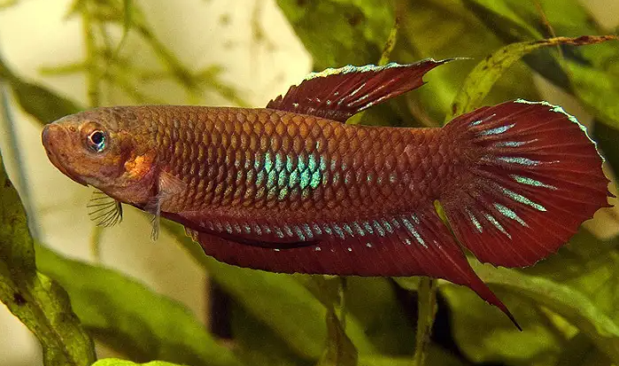

Systématique
- Ordre : Anabantiformes
- Famille : Osphronemidae
- Genre : Betta
- Espèce : Betta coccina
- Descripteur : Vierke, 1979

Betta coccina est l'espèce type du groupe coccina, originaire de Jambi à Sumatra. Le poisson ne dépasse guère 4,5 cm. Les mâles affichent une coloration rouge écarlate à rouge-mauve, avec une tache bleue sur le flanc. Le corps est fin et élancé, les nageoires longues et effilées.
Contrairement aux combattants classiques, cette espèce reste paisible et peut vivre en groupe. Elle construit un nid de bulles et n'est pas belliqueux. C'est une espèce rare et exigeante, réservée aux aquariophiles confirmés.
L'espèce est assez calme avec un comportement paisible. Les mâles s'intimident sans causer de blessures graves. Elle se maintient sans problème avec d'autres petites espèces paisibles.
C'est un excellent sauteur; le bac doit être bien couvert et ne pas être rempli à ras bord pour permettre l'accès à la couche d'air humide en surface.
Mode : ovipare constructeur de nid de bulles; la reproduction est difficile et réservée aux éleveurs expérimentés.
Le mâle fabrique un nid de bulles, la femelle le rejoindra pour le frai. Le mâle gardera seul le nid. Les alevins se développent en trois jours. L'obscurcissement du nid à certains stades peut favoriser l'éclosion.
Conditions critiques : eau extrêmement douce (GH = 0–2°dGH, KH = 0), très acide (pH < 5,0), changements d'eau quotidiens, aliments vivants (daphnies, artémias, cyclops, vers grindal). Patience indispensable pour l'accouplement.
Dimorphisme sexuel : le mâle est plus coloré avec des nageoires plus longues; la femelle est terne et trapue avec un ventre arrondi.
Espérance de vie : environ 2 à 3 ans en captivité.
Betta coccina fréquente les marais tourbeux et ruisseaux d'eau noire des forêts, caractérisés par une eau sombre teintée comme du thé, très acide, riche en tanins issus de la décomposition des feuilles et racines. Le pH peut descendre jusqu'à 3,0 en milieu naturel. Le substrat est couvert de feuilles mortes et branches submergées. À certaines saisons, l'eau se retire et le poisson survit dans la litière humide.
Répartition

Origine naturelle :
- Jambi et Riau (Sumatra central, Indonésie).
- Johor, Ayer Hitam (Malaisie péninsulaire).
- Marais tourbeux et ruisseaux d'eau noire forestiers.
- Aire de distribution très restreinte et fragmentée.
Paramètres de maintenance
Température : 24 à 27 °C.
pH : 4,0 à 6,0, idéalement inférieur à 5,0 pour la reproduction.
GH : 1 à 4 °dGH, eau douce.
Volume conseillé : minimum 20 L pour un individu.
Décoration : racines, bois flotté, feuilles mortes, peu ou pas de substrat. Filtre-éponge à air avec débit réduit. Eau osmosée recommandée.
Important : l'espèce tolère mal les nitrates; l'eau doit en être exempte.
Régime alimentaire
Régime : insectivore; se nourrit d'insectes aquatiques et petits invertébrés en nature.
En aquarium, préfère largement les aliments frais ou surgelés aux aliments secs. Les aliments vivants (daphnies rouges, artémias, cyclops) sont fortement recommandés pour exacerber les couleurs.
Attention à ne pas suralimenter, l'espèce est sujette à l'obésité.